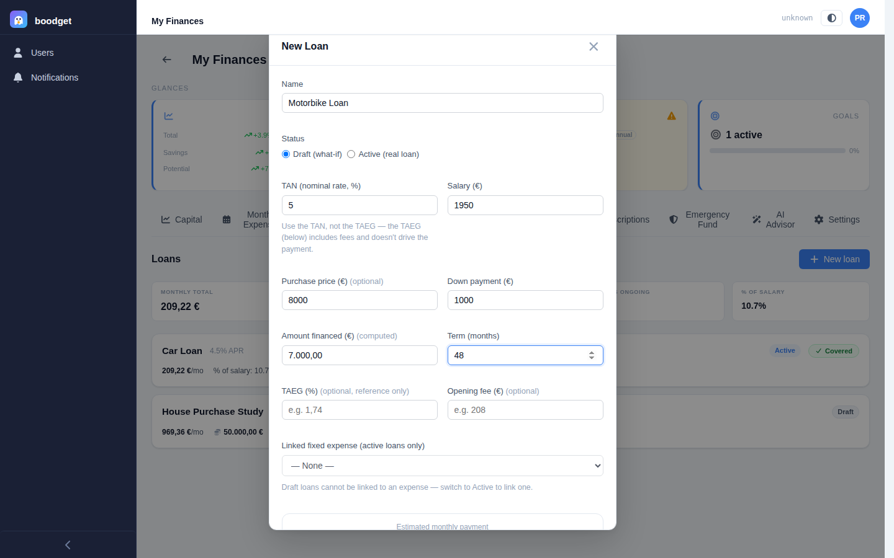
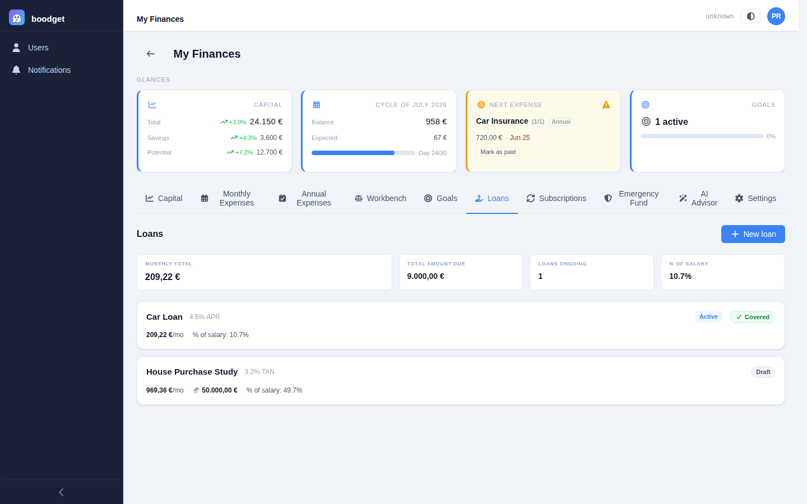
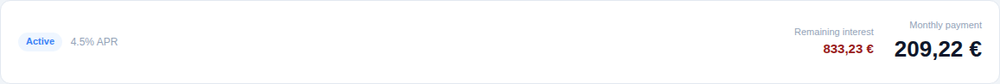
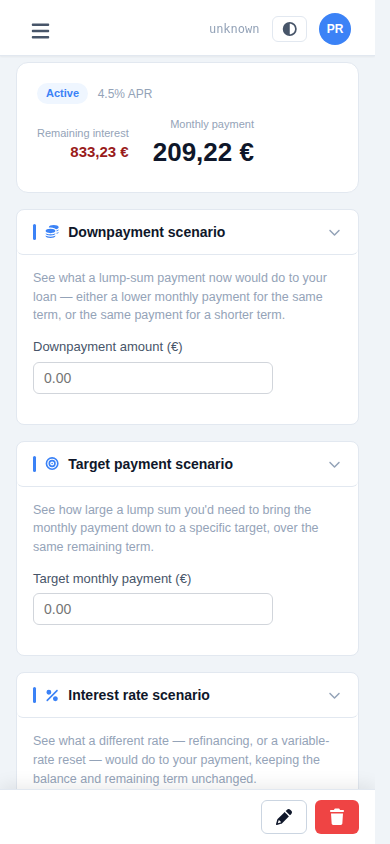
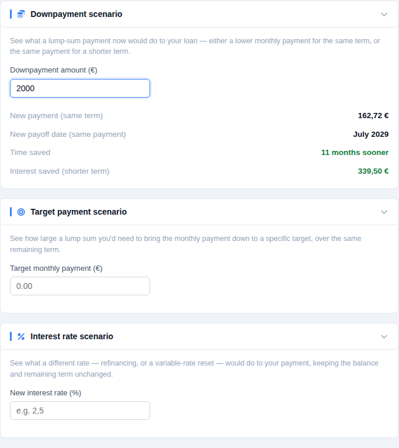
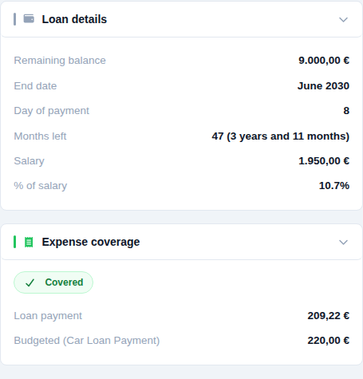
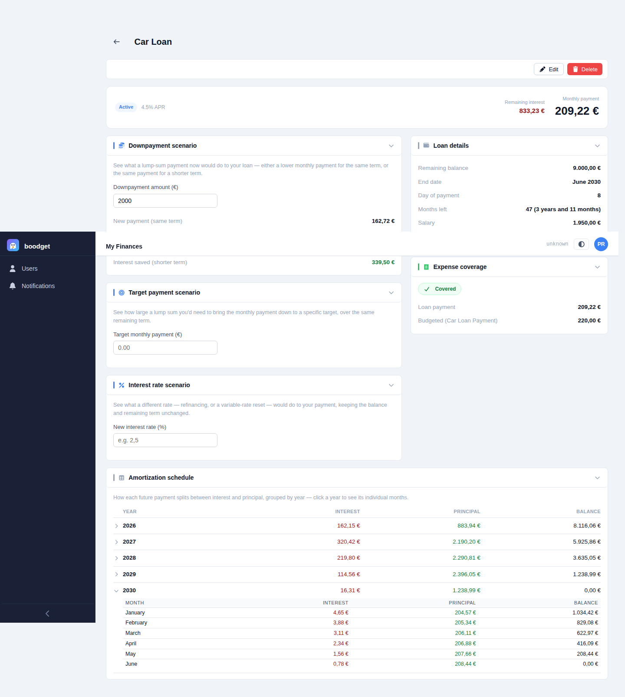
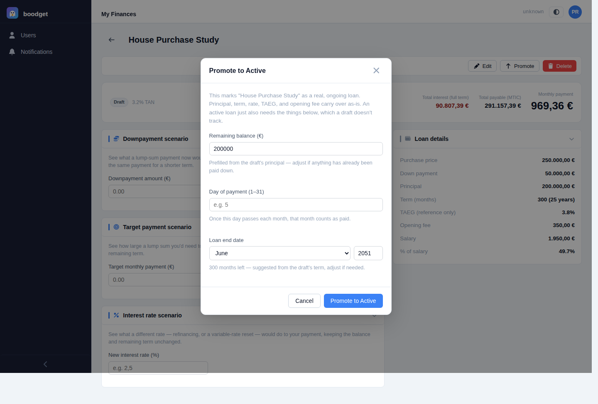

Studying and tracking Loans
A loan in boodget is either a draft — a what-if study for something you're still shopping for — or an active loan you're really paying off. Both get the same payment math, the same scenario calculators, and the same read on how much of your salary they eat into. This page walks through both, step by step.
A draft loan is defined by a principal and a term — or, if you'd rather think in terms of what you're buying, a purchase price and a down payment, with the principal derived automatically as the difference. You can also note the TAEG (the lender's fees-inclusive advertised rate, kept purely for comparison — it never drives the math) and an opening fee. An active loan instead tracks a real remaining balance, an end date, and a day of payment — months left is always computed from those, never entered by hand.
Every loan — draft or active — has an interest rate (always the TAN, the nominal rate that actually drives the payment formula, not the TAEG) and a salary, prefilled from the dossier's reference salary if one is set. Active loans can optionally link to a Fixed expense in your Monthly Expenses template, so boodget can tell you whether that expense is budgeted enough to cover the payment.

The Loans tab lists every loan as a card — name, rate, a Draft/Active badge, monthly payment, and percentage of salary — with a green Covered or red Underbudgeted pill on active loans linked to an expense. Above the list, a summary strip totals up the active loans only: monthly amount, total amount still due, how many are ongoing, and the combined percentage of salary, colour-coded against a configurable ceiling.

A loan's detail page opens with a compact hero: its status and rate, the monthly payment, and — whenever the underlying data is available, on either a draft or an active loan — the total interest over the full original term and the total amount payable (a simplified MTIC estimate that adds in any opening fee). Active loans additionally show the remaining interest still left to pay from today to payoff.


Every loan — draft or active — gets three ephemeral, nothing-saved calculators: a downpayment scenario (pay a lump sum now — get either a lower payment on the same term or the same payment on a shorter one, with the interest saved either way), a target payment scenario (name the payment you want — see the lump sum needed to get there), and an interest rate scenario (model a rate change — see the new payment and whether it costs you more or less interest overall). For a draft, its principal and term stand in for an active loan's balance and months left, so you can fine-tune a purchase study before ever signing anything.

The right column lists every stored figure for the loan — balance or principal, term or months left, end date and day of payment for active loans, and (whenever present, regardless of status) purchase price, down payment, TAEG, and opening fee as a historical record of how the loan was originated. For an active loan linked to a Fixed expense, an Expense coverage panel compares the payment against the budgeted value directly.

Active loans get a full payoff plan, computed entirely from the loan's current balance and rate — no separate data entry. It rolls up by calendar year (interest, principal, and ending balance for that year); clicking a year expands it into its individual months.

Once a draft becomes real, click Promote — a focused dialog asks only for the handful of fields a draft doesn't have: remaining balance (prefilled from the draft's principal), day of payment, and end date. Everything else — principal, term, rate, TAEG, opening fee — carries over automatically as a permanent record of how the loan started out, even though those fields can no longer be edited directly once active.
